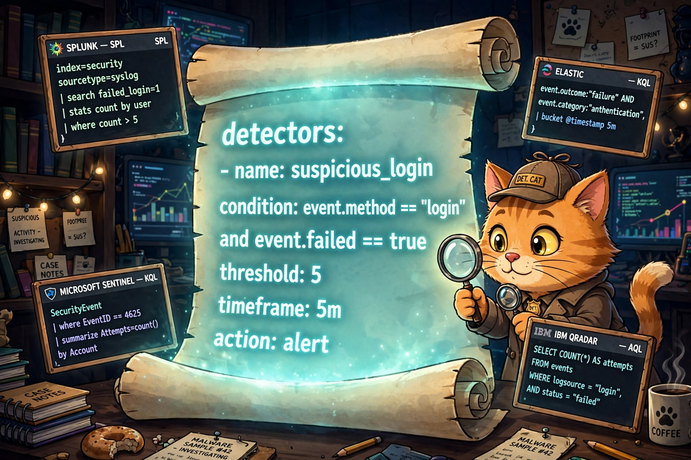

Write Your First Sigma Rule — and Test It Without Touching a SIEM

One YAML scroll, a dozen SIEMs. The cat detective writes the detection once; the backends do the translating.
Last time, we built a one-room SIEM
In the Level 4 lab, you wrote 45 lines of Python that watched the Windows Security log and barked at brute-force logons — five failures in ten minutes, Event ID 4625. It worked. On one machine. In Python. With field positions hardcoded for one Windows version.
Now imagine you're a detection engineer at a company with 20,000 endpoints and colleagues who don't all read Python. Your shop runs Splunk, the team you share detections with runs Microsoft Sentinel, and the contractor down the hall runs Elastic. You need a detection language everyone can read and every SIEM can run. That language is Sigma. Write once, detect everywhere.
Sigma, the Rosetta Stone of detections
Sigma is an open, vendor-neutral format for describing detections, written in plain YAML. You describe what bad looks like — failed logons, five-plus, ten minutes — not how to query it in Splunk's SPL versus Sentinel's KQL. Translator plugins called backends turn your rule into each platform's native query language: Splunk, Microsoft Sentinel, Elastic, QRadar, CrowdStrike LogScale, and more.
There's a giant community cookbook, too: the SigmaHQ repository on GitHub holds thousands of shared rules anyone can borrow, fork, and improve. Detection becomes detection-as-code — version control, code review, CI pipelines — the whole software discipline, applied to catching bad guys.
Anatomy of a rule: our watchdog, translated
Here's our LV 4 watchdog — the exact same "5 failures in 10 minutes" — as a Sigma rule. Save it as brute_force_logon.yml:
title: Potential Windows Brute Force Logon Activity
id: 9a7b2c4d-1e5f-4a8b-9c3d-2e6f7a8b9c0d
status: test
description: Detects 5+ failed Windows logons (Event ID 4625) for the
same account on the same host within 10 minutes — the classic
brute-force rhythm from our LV 4 watchdog.
author: samson-bot
date: 2026/09/24
logsource:
category: authentication
product: windows
detection:
selection:
EventID: 4625
timeframe: 10m
condition: selection | count(TargetUserName) by SourceComputerName > 5
fields:
- TargetUserName
- SourceComputerName
- IpAddress
falsepositives:
- Forgetful users fat-fingering passwords
- Misconfigured service accounts retrying on a loop
level: mediumWalking the important parts:
logsourceis the filing system.product: windows+category: authenticationtells every backend which logs this rule needs — no more "works on my Splunk, breaks on yours."detection.selectionis the filter: only failed logons.conditionis the rhythm:count(TargetUserName) by SourceComputerName > 5insidetimeframe: 10m. This is the stakeout logic from LV 4, minus the Python.fieldsis the 3-AM care package: the account, the host, and the source IP, so the analyst who gets paged has everything without digging.status: testis honesty in the metadata. New rules start astest, graduate toexperimentalin production, and only earnstableafter they've proven they don't cry wolf.
Where this lives in the real world
Follow the rule through a real shop and every tool category from this series gets a cameo:
- The EDR — CrowdStrike Falcon, SentinelOne, Defender for Endpoint — sits on every endpoint, collects the auth events, and forwards them upstream. That's the raw material.
- The SIEM — Splunk, Microsoft Sentinel, Elastic — ingests them and runs our rule (converted to SPL or KQL) on a schedule. The Sigma rule lives in the SIEM's detection library, version-controlled in git next to the SigmaHQ rules the team borrowed.
- The alert fires with our 3-AM care package attached. The analyst checks the timeline: a pile of 4625s, then — hopefully not — a 4624.
- Response: the EDR isolates the targeted host so guessing can't continue, the firewall team blocks the attacker's IP at the perimeter, and ITSM (ServiceNow, Jira) gets a ticket with the account, the IP, and the timeline — because "someone should look at this" isn't a process until it's a ticket with an owner.
Our LV 4 script was the detect half of the playbook. Sigma is how real teams write the detect half so it survives contact with more than one machine.
Test it yourself — no SIEM required
You don't need a Splunk license to prove this works. The Sigma toolchain validates and compiles rules on your laptop:
pip install sigma-cliStep 1 — validate. Catch typos and bad log-source combinations before they embarrass you:
sigma validate brute_force_logon.ymlStep 2 — compile to Splunk. Watch the YAML become a real Splunk correlation-search query:
sigma convert -t splunk brute_force_logon.ymlYou should get something like this — the same detection, in SPL:
EventID=4625
| bucket _time span=10m
| stats count by TargetUserName, SourceComputerName, _time
| where count > 5Step 3 — compile for Microsoft Sentinel. Same rule, different kitchen. Roughly, the equivalent KQL:
SecurityEvent
| where EventID == 4625
| summarize Failures = count() by TargetAccount, Computer, bin(TimeGenerated, 10m)
| where Failures > 5Same YAML in, two query languages out. That's the write-once promise — and it's why sharing rules between companies actually works: the SigmaHQ cookbook doesn't care which SIEM you run.
Sigma forces you to write the detection contract before the query: log source, fields, window, threshold. If you can't fill in the YAML, you don't have a detection yet — you have a hunch. Python loops are how you learn the rhythm; Sigma is how teams ship it.
Homework (pick one)
- Retune the stakeout. Change
timeframeto5mand the threshold to3, recompile, and predict how the noise changes before you deploy. Same discipline as LV 4's homework — now in one line instead of twenty. - Hunt remote logons only. Add
LogonType: 10(remote interactive, a.k.a. RDP) underselectionand recompile. Watch the SPL change — you just narrowed the stakeout to remote brute force. - Read the cookbook. Browse the SigmaHQ repo, find a rule for Event ID 4624 (successful logon), and read it like a recipe. You can now read any of the thousands.
Next at Level 7: we close the loop from the SOAR post and LV 4 — an end-to-end phishing triage playbook. Alert in, enrichment, verdict, ServiceNow ticket opened, no human touched it. The robots conduct themselves.